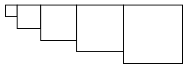

CPSC 124, Spring 2021: Sample Answers to the First Test
These are sample answers only. Often, answers that are less
detailed than the ones given here can still receive full credit.
Question 1.
What does the computer do to execute the assignment statement x = 3*y + 7;
Answer. The computer will fetch the value from the memory location that was assigned to the variable y. It will multiply that value by 3, and then add 7 to the value. It will store the answer in the memory location of the variable x.
Question 2.
What is the value of the Java expression (742 % 100) / 10 ? Why?
Answer.
The value is 4. The value of 742 % 100 is the remainder when 742 is divided by 10,
which is 42. Then, 42 / 10 is the integer quotient when 42 is divided by
10, discarding the fractional part, which is 4.
Question 3. Define the term algorithm, and explain why it plays such an important role in computer science.
Answer. An algorithm is an unambiguous, step-by-step procedure for performing some task (usually also required to complete after a finite number of steps). A computer program is the implementation of some algorithm. Algorithms are the central study of computer science — how to write them, how to make them more efficient, how to prove they are correct, what can be done by them.
Question 4. To work with Java programs on the command line, you have used the commands javac and java. Explain briefly what each of these commands does.
Answer. javac is a compiler. It translates a Java program into the machine language for the java virtual machine. If you apply it to a Java file, MyProgram.java, with a command such as javac MyProgram.java, then you get a .class file, MyProgram.class containing the compiled program. The java command is an interpreter that can be used to run the machine language program in a .class file, with a command such as java MyProgram.
Question 5a. Write a for loop to print out the integers from 1 to 10: 1 2 3 4 5 6 7 8 9 10.
Answer.
int i;
for (i = 1; i <= 10; i++) {
System.out.println(i);
}
OR:
int i;
for (i = 0; i < 10; i++) {
System.out.println(i+1);
}
Question 5b. Now wirte a while loop to do the same thing, output: 1 2 3 4 5 6 7 8 9 10.
Answer.
int i;
i = 1;
while ( i <= 10 ) {
System.out.println(i);
i = i+1; // (or i++;)
}
OR:
int i;
i = 0;
while ( i < 10 ) {
System.out.println(i+1);
i = i + 1;
}
OR:
int i;
i = 0;
while ( i < 10 ) {
i = i + 1;
System.out.println(i);
}
Question 5c. Suppose that jacksAge and jillsAge are variables of type int that already have values, and the values give Jack's age and Jill's age. Write a program segment that will test their ages and print the correct message, either "Jack is older", "Jill is older", or "Jack and Jill are the same age".
Answer.
if ( jacksAge > jillsAge ) {
System.out.println("Jack is older.");
}
else if ( jillsAge > jacksAge ) {
System.out.println("Jill is older.");
}
else {
System.out.println("Jack and Jill are the same age.");
}
Question 6. Draw the picture that is produced when the following code segment is executed:
int x, y, i;
x = 0;
y = 10;
for ( i = 0; i < 5; i++ ) {
g.strokeRect(x,0,y,y);
x = x + y;
y = y + 10;
}
Answer.

The value of y is used as the width and height of the rectangle that is drawn (so it is
a square). The value of y starts at 10, and the first rectangle is 10-by-10. But the
value of y goes up by 10 every time through the loop, so each square is 10 pixels bigger
than the previous square. The for loop runs 5 times, so there are 5 squares, and their
sizes will be 10, 20, 30, 40, and 50. The only remaining question is where they are placed.
The second parameter in g.strokeRect(x,0,y,y) is zero, so the tops of
all the rectangles line up, with y-coordinate zero. The x-coordinate starts out
at zero. Each time through the loop, the value of y is added to x, which moves
each rectangle horizontally exactly to the right edge of the previous rectangle. The best thing
to do is to just go through the loop and keep track of the values of the variables:
x y the rectangle
-------- ------- ----------------------------
0 10 g.strokeRect(0,0,10,10)
10 20 g.strokeRect(10,0,20,20)
30 30 g.strokeRect(30,0,30,30)
60 40 g.strokeRect(60,0,40,40)
100 50 g.strokeRect(100,0,50,50)
Question 7. Show the exact output that will be produced when the following code segment is executed:
int a, b;
a = 20;
b = 1;
while (a > 0) {
a = a / b;
b = b + 1;
if ( a > b ) {
System.out.println(a + " > " + b);
} else {
System.out.println(a + " <= " + b;
}
}
Answer.
20 > 1
10 > 3
3 < 4
0 < 5
WORK:
a: 20 20 10 3 0
b: 1 2 3 4 5
Question 8.
Write a complete Java program that does the following:
Read one line of text from the user into a String variable, using TextIO.
Then use a for loop to print out the same line of text backwards.
For example, if the user's input is Hello World, then the output will be
dlroW olleH.
Answer.
import textio.TextIO;
public class Backwards {
public static void main(String[] args) {
String userInput;
int i;
System.out.println("Enter some text:");
userInput = TextIO.getln();
System.out.println("Your input backwards is:");
for (i = str.length() - 1; i >= 0; i--) {
System.out.print( userInput.charAt(i) );
}
System.out.println();
}
}
OR:
import textio.TextIO;
public class Backwards {
public static void main(String[] args) {
String userInput, reverse;
int i;
System.out.println("Enter some text:");
userInput = TextIO.getln();
System.out.println("Your input backwards is:");
reverse = "";
for (i = 0; i < str.length(); i++) {
reverse = str.charAt(i) + reverse;
}
System.out.println(reverse);
}
}
Question 9. Write a code segment that simulates the following experiment: Flip a coin repeatedly until the coin has come up heads 1000 times. Then output the total number of times that the coin was flipped. Declare any variables that you use.
Answer.
int flips, heads;
flips = 0;
heads = 0;
while ( heads < 1000 ) {
if (Math.random() < 0.5) {
heads++;
}
flips++;
}
System.out.println("It took " + flips + " to reach 1000 heads.");
Question 10. Two important aspects of programming languages are syntax and semantics. Explain these two terms. As part of your answer, give a specific example of a syntax error in Java and a specific example of a semantic error in Java.
Answer.
Syntax refers to the "grammar" of the language. It is the set of rules that determine what is
legal in the language. For Java, a program with correct syntax can be compiled. If
the program has a syntax error, the compiler will report the error and refuse to compile the
program. For example, if a program says, if x > y that
is a syntax error because an if statement must have parentheses around the test.
Semantics refers to the "meaning" of a language. For Java, the semantics
determines what the program does when it is run. A semantic error doesn't stop the program from
running, but it will give incorrect results. For example, if a program says
if (x > y), but the programmer actually wanted to test
whether x is less than y, then that would be a semantic error.